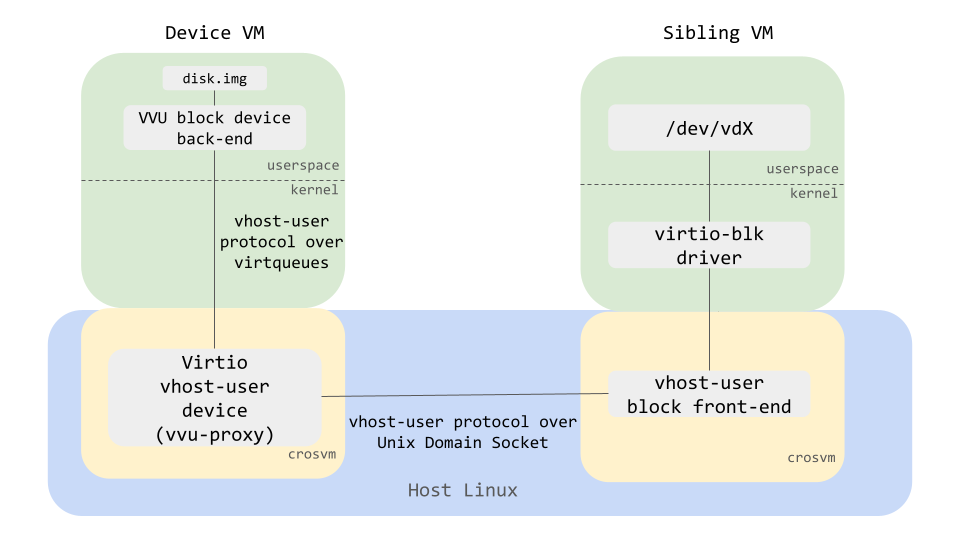

Virtio Vhost-User device (VVU)
Crosvm also supports the virtio vhost-user (VVU) device to run a vhost-user device back-end inside of another VM's guest. The following diagram shows how VVU works for virtio-block.

The "virtio vhost-user device", which is also called "vvu-proxy", is a virtio PCI device that works as a proxy of vhost-user messages between the vhost-user device back-end in the guest of a VM (device VM) and the vhost-user front-end in another VM (sibling VM).
How to run
Let's take a block device as an example and see how to start VVU devices.
First, start a device VM with a usual crosvm run command. At this time, put a crosvm binary in the
guest in some way. (e.g. putting it in a disk, sharing the host's crosvm with virtiofs, building
crosvm in the guest, etc). Also, make sure that the guest kernel is configured properly with virtio
and vfio features enabled (see caveat).
# On the host.
VHOST_USER_SOCK=/tmp/vhost-user.socket
# Specify the PCI address that the VVU proxy device will be allocated.
# If you don't pass `addr=` as an argument of `--vvu-proxy` below, crosvm will
# allocate it to the first available address.
VVU_PCI_ADDR="0000:00:10.0"
# Start the device VM with '-p "vfio_iommu_type1.allow_unsafe_interrupts=1"'.
crosvm run \
--vvu-proxy "${VHOST_USER_SOCK},addr=${VVU_PCI_ADDR}" \
-p "vfio_iommu_type1.allow_unsafe_interrupts=1" \
-m 4096 \ # Make sure that the device kernel has enough memory to be used
... # usual crosvm args
vmlinux
Then you can check that the VVU proxy device is allocated at the specified address by running
lspci in the guest.
# Inside of the device VM guest.
lspci -s $VVU_PCI_ADDR
# Expected output:
# > 00:10.0 Unclassified device [00ff]: Red Hat, Inc. Device 107d (rev 01)
# '107d' is the device ID for the VVU proxy device.
After that you need to make sure that the VVU device is bound to vfio_pci driver by manipulating sysfs.
# Inside of the device VM guest.
basename `readlink /sys/bus/pci/devices/$VVU_PCI_ADDR/driver`
# If that shows vfio-pci you are done, otherwise you need to rebind
# the device to the right driver.
echo "vfio-pci" > /sys/bus/pci/devices/$VVU_PCI_ADDR/driver_override
echo "$VVU_PCI_ADDR" > /sys/bus/pci/devices/$VVU_PCI_ADDR/driver/unbind
echo "$VVU_PCI_ADDR" > /sys/bus/pci/drivers/vfio-pci/bind
basename `readlink /sys/bus/pci/devices/$VVU_PCI_ADDR/driver`
# This should show "vfio-pci" now.
Then, start a VVU block device backend in the guest that you just started. Although the command
crosvm device is the same as vhost-user's example, you need to use the --vfio
flag instead of the --socket flag.
# Inside of the device VM guest.
crosvm device block \
--vfio ${VVU_PCI_ADDR} \
--file disk.img
Finally, open another terminal and start a vmm process with --vhost-user-blk flag on the host. The
current implementation of crosvm only allows a sibling VM to have a smaller memory size than the
device VM, so make sure to specify the memory size correctly.
# On the host, start a sibling VM. This can be done in the same way as the vhost-user block front-end.
crosvm run \
--vhost-user-blk ${VHOST_USER_SOCK} \
-m 512 \ # Make sure that the sibling VM does not have same or more memory than the device VM
... # usual crosvm args
vmlinux
As a result, disk.img in the device VM should be exposed as /dev/vda in the guest of the sibling
VM.
Caveats
-
In order to use the VVU feature, the Device VM kernel is required to be configured with couple of vfio features. Note that the name of the config may vary depending on the version of the kernel. We expect that the readers follow the instructions in this page to create a custom kernel. In addition to the instruction, the required configurations in the Linux Kernel version 5.10 are:
- CONFIG_ACPI
- CONFIG_VFIO
- CONFIG_VFIO_PCI
- CONFIG_VIRTIO_IOMMU
-
Currently, the sibling VM is required to have less memory than the device VM. Make sure that the memory size is explicitly defined when starting the VM for both device and sibling VMs.